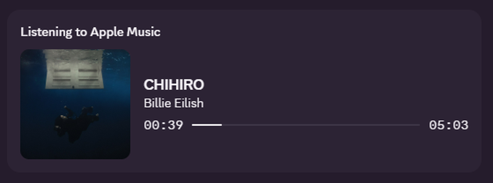

Apsenz Apple Music is an Apple Music Rich Presence tool for Discord on Windows.

Use the Vencord plugin if you already use Vencord. This is the recommended option.
Use the Windows desktop app if you want a normal installer.
Server Discord: https://discord.gg/k5zFTFjEhU